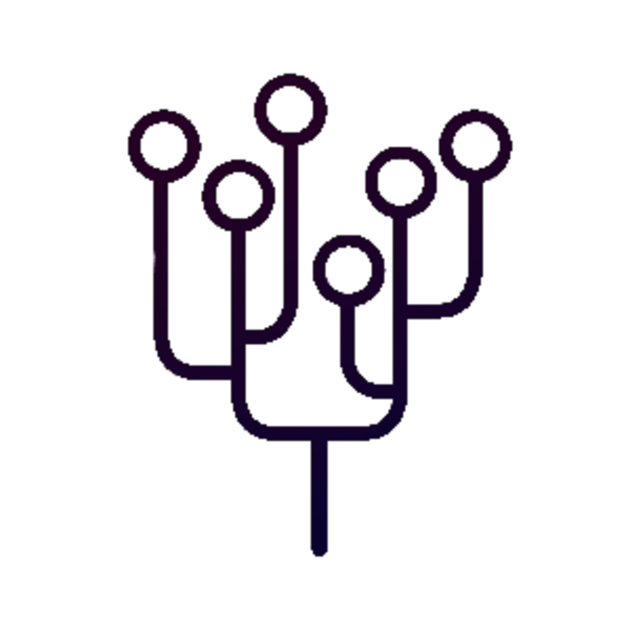

When I started coding in Elixir (around 2016), I was working for a financial company. Our product automatically invested money in the Forex market by copying traders' actions (market orders) in real time. We had the following:
Our System
In other words, our system:
- Subscribed to PostgreSQL for receiving trader actions.
- Published to RabbitMQ for:
- Categorizing trader actions.
- And enqueuing trader actions in the proper queue.
- Subscribed to Redis for receiving updates on prices.
- Subscribed to several RabbitMQ queues for:
- Receiving the categorized trader actions.
- And deciding whether it should open/close some market orders or not.
- Opened and closed market orders.
We needed to be able to communicate with three systems (PostgreSQL, RabbitMQ and Redis). However, in general, we only needed three actions:
subscribe/1to a channel.publish/2a message in a channel.unsubscribe/1from a channel.
If we could generalize those three actions into an API, we could then implement three individual adapters for every system to handle the annoying stuff like disconnections, failures, resource management, protocols, etc.

Table of Contents
Chapter I: Meet Yggdrasil
Handling subscriptions should be easy and, in an ideal world, we would only need to know where to connect and start receiving messages right away.
We shouldn't need to worry about secondary (yet relevant) things like disconnections, failures and managing resources.

Yggdrasil is an immense mythical tree that connects the nine worlds in Norse cosmology.
Yggdrasil was our pub-sub generalization. Using the strong foundations of Phoenix pub-sub library, we built an agnostic publisher/subscriber application that has:
- Multi node support.
- Simple API:
subscribe/1,unsubscribe/1andpublish/2. - A
GenServerwrapper for handling subscriber events easily. - A basic adapter for using Elixir message distribution.
- Fault-tolerant adapters for:
One API to rule them all
Yggdrasil's API is very simple:
- A process subscribes to
"my_channel":
iex> :ok = Yggdrasil.subscribe(name: "my_channel")
iex> flush()
{:Y_CONNECTED, %Yggdrasil.Channel{...}}
- A process (in this case the same process) publishes the message
"my message"in"my_channel".
iex> :ok = Yggdrasil.publish([name: "my_channel"], "my message")
- The message should be in the mailbox of the subscriber process:
iex> flush()
{:Y_EVENT, %Yggdrasil.Channel{...}, "my message"}
- The subscriber can unsubscribe from the channel to stop receiving messages:
iex> :ok = Yggdrasil.unsubscribe(name: "my_channel")
iex> flush()
{:Y_DISCONNECTED, %Yggdrasil.Channel{...}}
flush()cleans the IEx process mailbox. In general, receiving Yggdrasil messages should be the same as receiving messages when the sender usessend/2.

Yggdrasil behaviour
Yggdrasil provides a behaviour for writing subscribers easily. Following the previous example, the subscriber could be written as follows:
defmodule Subscriber do
use Yggdrasil
def start_link do
channel = [name: "my_channel"]
Yggdrasil.start_link(__MODULE__, [channel])
end
@impl true
def handle_event(_channel, message, _state) do
IO.inspect {:mailbox, message}
{:ok, nil}
end
end
This subscriber will print the message as it receives it:
iex> {:ok, _pid} = Subscriber.start_link()
iex> :ok = Yggdrasil.publish([name: "my_channel"], "my message")
{:mailbox, "my_message"}
An interesting side-effect is that now we can send messages to any process as long as they are subscribed to the right channel without needing to know the process PID or name.
Chapter II: Yggdrasil and PostgreSQL Notifications
One thing I really like about PostgreSQL is its notifications via pg_notify. This feature is very useful when trying to get real-time notifications for certain changes in a databases.
PostgreSQL notifications
Creating notifications in PostgreSQL is very easy e.g. let's say we have a table for books:
-- User table creation
CREATE TABLE books (
id SERIAL PRIMARY KEY,
title TEXT NOT NULL UNIQUE
);
and we want JSON notifications in the channel new_books every time a new book is created in our database e.g:
{
"id": 1,
"title": "Animal Farm"
}
The trigger could be implemented as follows:
-- Trigger function creation
CREATE OR REPLACE FUNCTION trigger_new_book()
RETURNS TRIGGER AS $$
DECLARE
payload JSON;
BEGIN
payload := json_build_object(
'id', NEW.id,
'title', NEW.title
);
PERFORM pg_notify('new_books', payload::TEXT);
RETURN NEW;
END;
$$ LANGUAGE plpgsql;
-- Sets the trigger function in 'books' table
CREATE TRIGGER books_notify_new_book
BEFORE INSERT ON books
FOR EACH ROW
EXECUTE PROCEDURE trigger_new_book();
Then, the following query would trigger our JSON message in the channel new_books:
INSERT INTO books (title) VALUES ('Animal Farm');
The Problem
Though subscribing to our database notifications can be done easily with Postgrex library, handling the connections to the database is a bit of a hassle. We need to ensure:
- Connection multiplexing: avoiding over consuming database resources.
- Fault-tolerant connections: supporting re-connections in case of failure or disconnection.
- Re-connection back-off time: avoiding overloading the database on multiple re-connections.

The Solution
Yggdrasil for PostgreSQL is an adapter that supports all the features mentioned above while maintaining Yggdrasil's simple API e.g:
For our example, we could subscribe to the database messages by doing the following:
iex> Yggdrasil.subscribe(name: "new_books", adapter: :postgres, transformer: :json)
iex> flush()
{:Y_CONNECTED, %Yggdrasil.Channel{...}}
Running the following query:
INSERT INTO books (title) VALUES ('1984');
We will get the following message in IEx:
iex> flush()
{:Y_EVENT, %Yggdrasil.Channel{...}, %{"id" => 2, "title" => "1984"}}
Note:
Yggdrasilcomes with built-in message transformers. We've used:jsontransformer for this example in order to get a map from the JSON data.
Additionally, our subscriber could also be an Yggdrasil process e.g:
defmodule Books.Subscriber do
use Yggdrasil
def start_link(options \\ []) do
channel = [
name: "new_books",
adapter: :postgres,
transformer: :json
]
Yggdrasil.start_link(__MODULE__, [channel], options)
end
@impl true
def handle_event(_channel, %{"id" => id, "title" => title}, _state) do
... handle event ...
{:ok, nil}
end
end
It's also possbible to use Yggdrasil.publish/2 with PostgreSQL:
iex> message = %{"id" => 3, "title" => "A Brave New World"}
iex> Yggdrasil.publish([name: "new_books", adapter: :postgres, transformer: :json], message)

Chapter III: Yggdrasil and RabbitMQ Subscriptions
One of the features I really like about RabbitMQ is its queue routing. Its flexibility allows you to do interesting things without much of a hassle. But before I dig deep into RabbitMQ's routing capabilities, I would like to mention some concepts.
Connections and Channels
RabbitMQ uses not only connections, but virtual connections called channels. The idea of channels is to introduce multiplexing in a single connection. A small system could establish only one connection with RabbitMQ while opening a channel for every single execution thread e.g:
A regular RabbitMQ connection
</figcaption>
The rule of thumb would be to use:
- One connection per application.
- One channel per process in the application.
Note: Once our connection starts to be overloaded, we can start adding more connections to our connection pool.
With a normal RabbitMQ setup, we need to deal with:
- Connection pools: avoiding over consuming resources.
- Channel cleaning: avoiding channel memory leaks when they are not closed properly.
- Fault-tolerant connections: supporting re-connections in case of failure or disconnection.
- Re-connection back-off time: avoiding overloading the database on multiple re-connections.
Exchanges and Queues
An exchange is a message router. Every queue attached to it will be identified by a routing key. Typically, routing keys are words separated by dots e.g. spain.barcelona.gracia.
Additionally, routing keys support wildcards, for example: spain.barcelona.* will match messages with routing keys like spain.barcelona.gracia and spain.barcelona.raval.
It's easier to see these concepts with an image example:
A RabbitMQ exchange
</figcaption>
In the previous image:
- Publisher X and Publisher Y are sending messages to Exchange logs.
- Subscriber A is subscribed to
logs.*. - Subscriber B is subscribed to
logs.error.
Then:
- Publisher X message will end up in Queue
logs.info. - Publisher Y message will end up in Queue
logs.error. - Subscriber A will receive Publisher X and Publisher Y's messages.
- Subscriber B will receive Publisher Y's message.

Handling Subscriptions in Yggdrasil
Handling RabbitMQ's complexity might be intimidating. Fortunately, Yggdrasil for RabbitMQ generalizes the complexity in order to have a simpler API.
The biggest difference with previous adapters is the channel name. Instead of being a string, it's a tuple with the exchange name and the routing key e.g:
A subscriber would connect to the exchange amq.topic using the routing key logs.* as follows:
iex(subscriber)> Yggdrasil.subscribe(name: {"amq.topic", "logs.*"}, adapter: :rabbitmq)
iex(subscriber)> flush()
{:Y_CONNECTED, %Yggdrasil.Channel{...}}
Note: The exchange must exist and its type should be
topic. The exchangeamq.topicis created by default in RabbitMQ.
Then a publisher could send a message to the exchange amq.topic using logs.info as routing key:
iex(publisher)> Yggdrasil.publish([name: {"amq.topic", "logs.info"}, adapter: :rabbitmq], "Some message")
:ok
Finally, the subscriber would receive the message:
iex(subscriber)> flush()
{:Y_EVENT, %Yggdrasil.Channel{...}, "Some message"}
Additionally, the subscriber can be written using the Yggdrasil behaviour:
defmodule Logs.Subscriber do
use Yggdrasil
def start_link(options \\ []) do
channel = [
name: {"amq.topic", "logs.*"},
adapter: :rabbitmq
]
Yggdrasil.start_link(__MODULE__, [channel], options)
end
@impl true
def handle_event(_channel, message, _state) do
... handle event ...
{:ok, nil}
end
end
Lost Messages
Yggdrasil will acknowledge the messages as soon as they arrive to the adapter, then it will broadcast them to all the subscribers. If the adapter is alive while the subscribers are restarting/failing, some messages might be lost.
Though it's possible to overcome this problem with exclusive queues, this feature is not implemented yet.

Chapter IV: Yggdrasil as Distributed PubSub
Yggdrasil's default adapter supports multi-node subscriptions out-of-the-box thanks to Phoenix PubSub. This distributed capabilities can be extended to any adapter compatible with Yggdrasil v5.0 without writing a single line of extra code.

Before We Start
I've used this example project for the code in this article. You can skip this section safely as long as you remember the following:
Basicproject has only Yggdrasil.Rabbitproject has Yggdrasil for RabbitMQ.- A RabbitMQ server is available.
- The host name is called
matrix. Your machine's will be different.
If you want to follow along with the examples in this article, you can download the example project using the following command:
$ git clone --depth 2 -b blog https://https://github.com/alexdesousa/alexdesousa.github.io examples && cd examples && git filter-branch --prune-empty --subdirectory-filter examples/matrix HEAD
In the folder you'll find:
that has a basic version of Yggdrasil. - Rabbit project
that has Yggdrasil for RabbitMQ. - A docker compose with a RabbitMQ server:
$ cd rabbit && docker-compose up

Basic Message Distribution
Yggdrasil's default adapter piggybacks on Phoenix PubSub for the message delivery, inheriting its distributed capabilities e.g. let's say we have the following:
- The node
:neo@matrixusingBasicproject:
$ iex --sname neo -S mix
- The node
:smith@matrixalso usingBasicproject:
$ iex --sname smith -S mix
- Both nodes are interconnected:
iex(smith@matrix)1> Node.connect(:neo@matrix)
true
Then :smith@matrix can subscribe to any channel where :neo@matrix is publishing messages e.g:
In :smith@matrix, we subscribe to the channel "private":
iex(smith@matrix)2> Yggdrasil.subscribe(name: "private")
:ok
iex(smith@matrix)3> flush()
{:Y_CONNECTED, %Yggdrasil.Channel{...}}
:ok
In :neo@matrix, we publish a message in the channel "private":
iex(neo@matrix)1> channel = [name: "private"]
iex(neo@matrix)2> Yggdrasil.publish(channel, "What's the Matrix?")
:ok
Finally, we can flush :smith@matrix mailbox and find our message:
iex(smith@matrix)4> flush()
{:Y_EVENT, %Yggdrasil.Channel{...}, "What's the Matrix?"}
:ok
Distributed pubsub as simple as that.

Bridged Message Distribution
The bridge adapter makes a bridge between any Yggdrasil adapter and the default adapter. This allows adapters to inherit the distributed capabilities of the default adapter e.g. let's say we have the following:
- The node
:neo@matrixusingBasicproject:
$ iex --sname neo -S mix
- The node
:trinity@matrixusingRabbitproject:
$ iex --sname trinity -S mix
- The node
:trinity@matrixhas access to a RabbitMQ server. - Both nodes are interconnected:
iex(trinity@matrix)1> Node.connect(:neo@matrix)
true
So our final infrastructure would look like the following:
A node using a bridge adapter to connect to RabbitMQ
</figcaption>
Now that our nodes are connected, every adapter is available to them.
Through :trinity@matrix, the node :neo@matrix can now subscribe to
a RabbitMQ exchange:
iex(neo@matrix)1> channel = [name: {"amq.topic", "private"}, adapter: :rabbitmq]
iex(neo@matrix)2> Yggdrasil.subscribe(channel)
:ok
iex(neo@matrix)3> flush()
{:Y_CONNECTED, %Yggdrasil.Channel{...}}
:ok
Or even publish messages:
iex(neo@matrix)4> Yggdrasil.publish(channel, "What's the Matrix?")
:ok
iex(neo@matrix)3> flush()
{:Y_EVENT, %Yggdrasil.Channel{...}, "What's the Matrix?"}
:ok
The good thing about this feature is that it works with any adapter that supports Yggdrasil v5.0.

In the end: One API to Rule Them All
Yggdrasil hides the complexity of a pub/sub and let's you focus in what really matters: messages.
Hope you found this article useful. Happy coding!


Alex de Sousa
Refill Aqua co-founder. Elixir alchemist. Tech enthusiast.